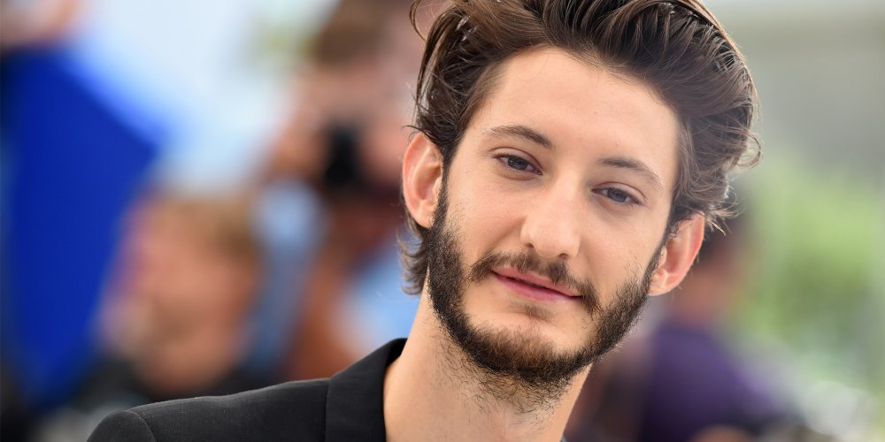

Pierre Niney commence sa carrière au théâtre. Après avoir servi à la compagnie Pandora, au cours Florent et au Conservatoire de Paris, il intègre la troupe de la Comédie-Française en 2010 à seulement 21 ans, ce qui fait de lui le plus jeune pensionnaire de la troupe à ce jour. Il quittera la Comédie-Française en 2015. Il s'essaie aussi aux téléfilms à la télévision et aux courts-métrages, et apparait parfois dans des clips de musique, comme celui du titre Balance ton quoi de la chanteuse belge Angèle. Enfin, il intègre le cinéma français en jouant dans LOL de Lisa Azuelos, dans L'Armée du Crime de Robert Guédiguian, sélectionné au Festival de Cannes 2009, et dans Les Émotifs anonymes aux côtés de Benoît Poelvoorde et Isabelle Carré.
En 2012, il est le rôle principal du film J'aime regarder les filles. Il sera nommé comme Meilleur Espoir aux Césars 2012. En 2013, il est à nouveau nommé aux César pour son rôle dans Comme des frères. La même année, il est connu du grand public en partageant l'affiche du film 20 ans d'écart avec Virginie Effira. La consécration de Pierre Niney arrive en 2015 où il reçoit le César du meilleur acteur pour son rôle de Yves Saint Laurent dans le biopic éponyme. Il devient à seulement 25 ans le plus jeune comédien à remporter ce prix. Il y donne la réplique à Guillaume Gallienne et Charlotte Le Bon. Grâce à ce rôle, il remporte aussi le prix Patrick Dewaere.
Après la consécration aux Césars 2015, Pierre Niney a comme projet de réaliser La promesse de l'aube, adapté du roman de Romain Gary. Il donne la réplique à Charlotte Gainsbourg. C'est cette année-là qu'il quitte la Comédie Française. Il devient aussi l'acteur principal d'un film d'un nouveau genre pour lui, un thriller, nommé Un homme idéal. L'année suivante, Pierre est l'un des acteurs principaux de Five, un long-métrage réalisé par un de ses amis, Igor Gotesman, il tient l'affiche aussi avec d'autres amis. Il souhaite alors retourner à la comédie après deux films de lourds travail . Toujours en 2016, il est le rôle principal dans Frantz, de François Ozon, et interprète Philippe Cousteau dans L'Odyssée, une biographie du commandant Cousteau. Récemment, Pierre Niney a rejoint le casting de la saga OSS 117, auprès de Jean Dujardin dans ce troisième volet nommé OSS 117 : Alerte rouge en Afrique noire. La sortie est prévue pour février 2021.